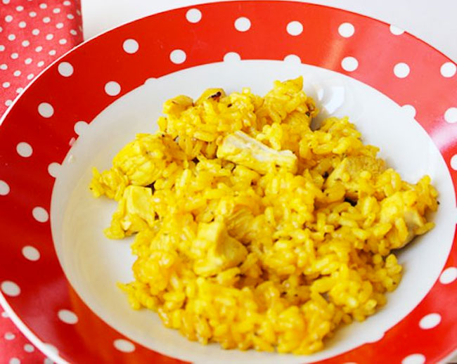

Nuestras Recetas:
Tarta de limon:
| Ingredientes |
Cantidad |
| Limon |
1 Kg |
| Harina |
2 Kg |
| Manteca |
80 Gr |
Pasos:
- Primero precalentar el horno, como siempre a 180º
- Mezclar la manteca el con azúcar. Batir hasta que quede cremosa y blanca.
- Ir incorporando la harina de a poco, hasta que se integre. Quedará una especie de arena mojada.
- Forrar con eso una tartera enmantecada y llevar a horno 10 minutos. Retirar y dejar enfriar.

Arroz con Pollo:
| Ingredientes |
Cantidad |
| Pechuga de pollo |
1 |
| Arroz |
400 Gr |
| Tomates |
2 |
| Sal |
10 Gr |
| Caldo de Pollo |
1.5 lt |
Pasos:
- Salteamos el pollo
- Incorporamos el arroz
- Cocinamos
- Servimos
